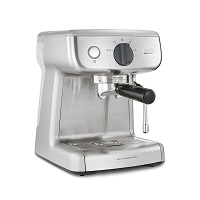
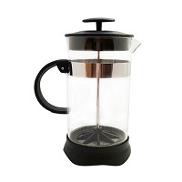
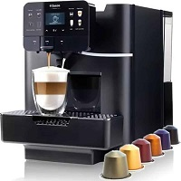

Filtro:
También conocida como "de goteo", consiste en un depósito de agua que se calienta y se hace pasar
a
través del café molido colocado sobre un filtro de papel o malla de aluminio o acero.
El
agua
pasa lentamente a través del café medianamente molido, y cae gota a gota por gravedad hasta una
jarra de cristal.
Generalmente se mantiene caliente gracias a una base o placa eléctrica.
Espresso:
Puede encontrarse como "exprés".
Hace pasar agua caliente (90° generalmente) a una presión de
entre 8 y 15 atmósferas durante 20 o 30 segundos por café molido muy fino, extrayendo su sabor y
esencia.
La presión es clave en este tipo de máquinas y determina la cremosidad del café.
La
preparación es rápida, en menos de dos minutos puede obtenerse una bebida. Es muy común en
restaurantes y cafeterías.
Prensa francesa:
Pese a ser una invención italiana, fueron los franceses quienes la popularizaron, de ahí su nombre.
El café requiere ser molido en grano grande para que no traspase el filtro.
La preparación
es relativamente rápida y sencilla, sólo se vierte agua caliente, se esperan unos cinco minutos y se
comprime lentamente la prensa o pistón.
Puede utilizarse también para preparar té u otras
infusiones.
Cafetera de cápsulas:
Utiliza pequeñas cápsulas que contienen unos 7 gramos de café en polvo, cantidad suficiente para una
taza.
Algunas están fabricadas en aluminio, son herméticas y pueden encontrarse diferentes
variedades o sabores para preparar.
También es un método rápido, ya que en menos de dos minutos
se logra servir una taza.